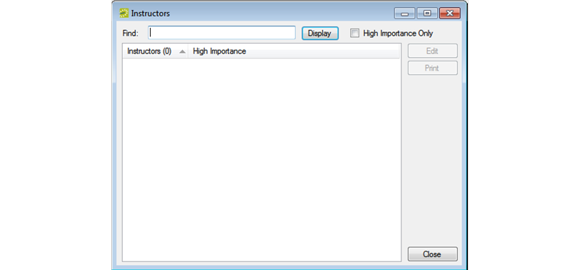
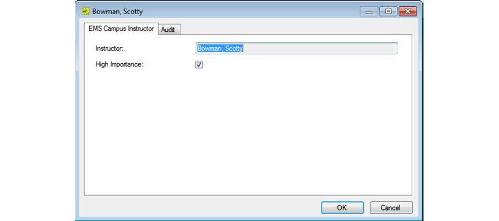

Configure Instructors
When you configure the instructors for your courses, you have the option of designating an instructor as one of “High Importance.”
To configure instructors
- On the {{product_campus}} menu bar, click Academic Planning > Configuration > Instructors. The {{product_campus}} Instructors window opens.

- Optionally, do one or more of the following:
- To display a list of all your synchronized instructors, click Display.
- To filter the list by instructor name (last name, then first name), in the Find field, enter a search string.
- To filter the list by instructor status, select High Importance Only.
Tip: The search string is not case-sensitive, but your search is limited to the exact order of the characters in the string and it must begin with the information for which you are searching. For example, a search string of Scott returns Scott, Todd, but not Bowman, Scott.
Tip: The optional “High Importance” designation is used during optimization. Courses that are taught by instructors with this designation have the potential to be given room preference priority.
- Select the instructor whom you are configuring, and then click Edit. The Instructor dialog box opens. The Instructor field displays the name of the selected instructor and you cannot edit this value.

- Select or clear the High Importance option for the instructor as appropriate, and then click OK. The Instructor dialog box closes. You return to the {{product_campus}} Instructors window with the newly configured instructor automatically selected.